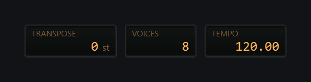
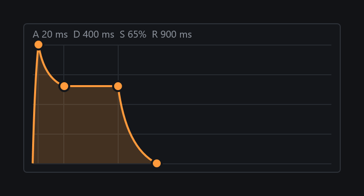
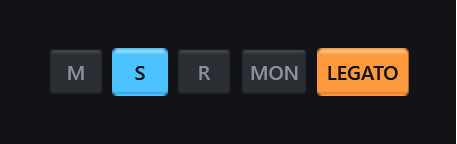
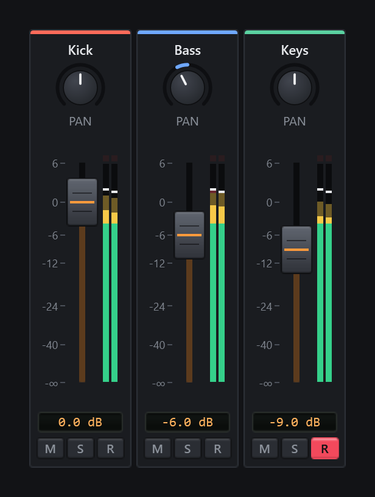
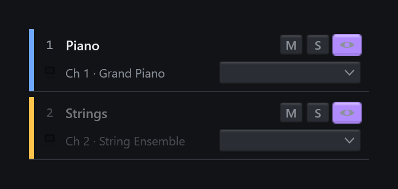

Controls
All 22 controls of nDAWControls. Every page has a live screenshot in all five skins, XAML and C# examples, the mouse and keyboard handling, and the full API.
SkinGraphite
#Parameters
 KnobA rotary control with a value ring, a label and a value readout. The workhorse of every synth and effect panel.
KnobA rotary control with a value ring, a label and a value readout. The workhorse of every synth and effect panel. FaderA slider with a moving cap, vertical or horizontal, with a decibel curve for mixer channels.
FaderA slider with a moving cap, vertical or horizontal, with a decibel curve for mixer channels.
ValueBoxA compact numeric field: drag or scroll it like a knob, or double-click and type a value. XYPadTwo parameters at once on a square pad, such as filter cutoff and resonance.
XYPadTwo parameters at once on a square pad, such as filter cutoff and resonance.
EnvelopeEditorA graphical ADSR envelope: drag the handles to set attack, decay, sustain and release.#Metering
 LevelMeterA peak and RMS meter with peak hold and a clip light, fed lock-free from your audio thread.
LevelMeterA peak and RMS meter with peak hold and a clip light, fed lock-free from your audio thread. ValueScaleTick marks and labels for a fader or meter, using the same taper so the ticks line up exactly.
ValueScaleTick marks and labels for a fader or meter, using the same taper so the ticks line up exactly. MidiActivityMonitorMIDI activity lights per channel or per track: notes, controllers, held notes and the last message.
MidiActivityMonitorMIDI activity lights per channel or per track: notes, controllers, held notes and the last message.#Buttons and transport

LedToggleButtonA latching button that lights up when on: mute, solo, record arm, monitor and your own toggles. TimeDisplayAn LCD readout of a song position, as bars, beats and ticks or as minutes and seconds.
TimeDisplayAn LCD readout of a song position, as bars, beats and ticks or as minutes and seconds.#Mixer and layout

ChannelStripA complete mixer channel: name, pan, fader with a dB scale, stereo meter, mute, solo and arm.
TrackHeaderThe header of a track in an arranger or track list: colour, number, name, mute, solo, output and activity. DawPanelA titled panel in the skin colours, with header tools and a hide button.
DawPanelA titled panel in the skin colours, with header tools and a hide button. NineFrameA drop-in replacement for Border with bevels, drawn by the same renderer as the controls.
NineFrameA drop-in replacement for Border with bevels, drawn by the same renderer as the controls.#Piano


#Note editing
 PianoRollA fast note editor with a keyboard gutter, bar ruler, snapping, selection, zoom and a playhead.
PianoRollA fast note editor with a keyboard gutter, bar ruler, snapping, selection, zoom and a playhead. ControllerLaneVelocity, controller and pitch-bend editing under a piano roll, following its scroll, zoom and playhead.
ControllerLaneVelocity, controller and pitch-bend editing under a piano roll, following its scroll, zoom and playhead. StepSequencerA drum-machine grid with velocity per step, row labels, groups and a playhead.
StepSequencerA drum-machine grid with velocity per step, row labels, groups and a playhead.